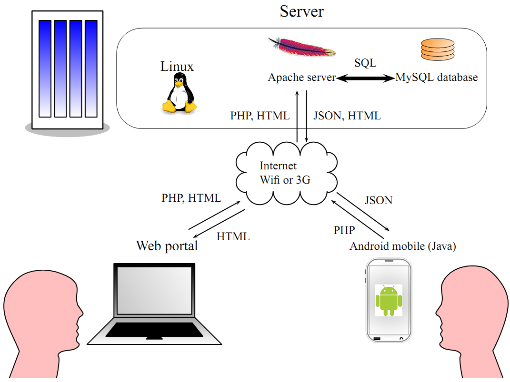
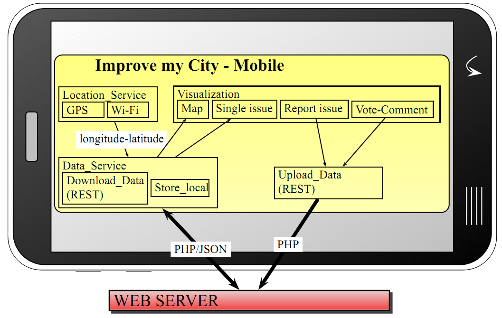

Improvemycity-mobile
The Android mobile version of the web-based ImproveMyCity application
Developer Guide
General communication framework
The communication framework is built based on the http and https protocols. The mobile client communicates with the backed-end infrastructure of the Improve-My-City Joomla component (https://github.com/icos-urenio/Improve-my-city/wiki) by calling URLs from the remote server and receiving string data as a response, as shown in Figure 1.
The mobile application calls the URL of the PHP script that corresponds to a user action along with its parameters, e.g. download 40 nearby issues. The response from the server is string data in JSON (JavaScript Object Notation) format. The URLs of the PHP scripts are predefined by the Improve-My-City Joomla component and therefore there is no need for severe modifications on server side. The modifications that should be performed are: a) “JSON” should be set to enabled, and b) “Encryption key” should match the one used in the mobile application.
These can be modified in the administrator side of Joomla in Improve-My-City component following the instructions. JSON activation enables communication with the mobile client. The encryption key is used for decrypting the user password sent by the mobile client encrypted with the same predefined key. Details for setting the encryption key are available under (ling to ReadMeCustomize.docx). Images are received by calling their URLs with byte streaming and submitted with the POST command. See also the following screenshots.


Android code architecture
The mobile client is written in JAVA that enables fast applications with access to hardware and software components of Android core. A graph showing the main functionalities of the application is given in Figure 2. Location_Service is a service that tracks user position (longitude and latitude) from information taken from GPS or Wi-fi. This information triggers the downloading of data. Data_Service downloads issues, images, categories, and votes. This data is stored locally in a SQLite database in the mobile device so that issues are visible also when the device is offline. Comments are not stored locally. Data like new issues or new votes/comments are uploaded with class Upload_Data with http/php protocol where the parameters of the php is the data to send.
The code is split into the following packages:
| com.mk4droid.IMC_Activities | Activities (windows) of the application. |
| com.mk4droid.IMC_Constructors | Constructors of Objects needed for the application. |
| com.mk4droid.IMC_Core | Custom implementations that improve the visualization of the application. |
| com.mk4droid.IMC_Services | Localization and Downloading-storing-uploading data |
| com.mk4droid.IMC_Store | Communication and security constants of the application |
| com.mk4droid.IMC_Utils | Various utilities regarding time transformations, reverse geocoding, and file copy |
More details can be found in the javadoc that is included in the project folder.